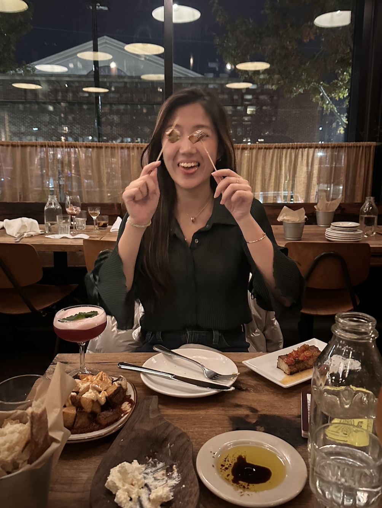
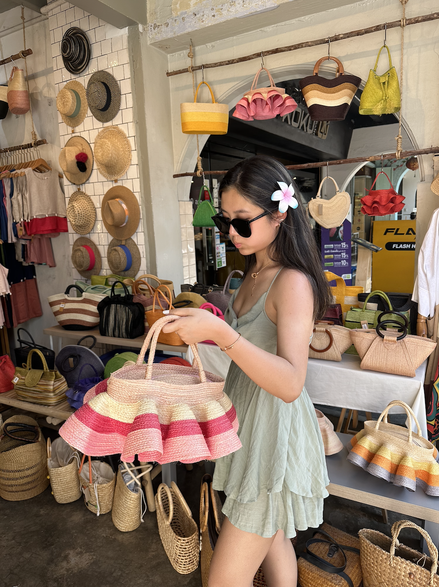

Cindy Jiang
I was born in Tokyo, grew up in Shanghai, and now call Los Angeles home while pursuing a master's in Communication and Data Science at USC. In Spring 2023, I spent a semester in London, exploring the city with my friends and cohort—an unforgettable chapter of my life.
My passion for data goes beyond numbers; I see it as a canvas for storytelling and innovation, connecting insights to real-world impact. I recently became a golf addict, and yes, I’m the type to analyze my swing data.
Bits & Pieces of My Life
Friends
Athlete
Foodie

Hokkaido
Thailand

Matsuyama
Wimbledon